11manually annotated frames
9 homographies + 2 affine fallbacks
2.13 cmwithheld landmark RMSE
39 points, same annotator
3.99 cmmedian overhead stone discrepancy
44 matches; RMSE 7.15 cm
1.78 cmsame-board zoom disagreement
7 paired stones, two frames
Decision: proceed with a constrained overhead-view pilot.There is enough evidence to justify the next implementation step: manually verified overhead frames → stone centres → calibrated coordinates. Keep low-angle footage outside the accuracy claim until stone-height effects are handled. Treat official diagram positions as a noisy reference, and report coverage and refusals alongside position errors.
What was actually done
I sourced the CBC video, downloaded the official Results Book, loaded the pinned CurlR dataset, and manually marked visible rink landmarks and stone body centres. The pilot covers 11 selected frames and 10 end/shot keys. One key is excluded from state comparison because the final collision is still settling; another observation repeats a board at a different zoom. There are nine distinct reference states compared, including two deliberately partial stationary-stone comparisons.
Each frame uses 6–8 fitting landmarks and 2–4 separate validation landmarks. Most fits use one set of ring/line intersections and validate on another ring. Radii are nominal World Curling dimensions: 1.829, 1.219 and 0.610 metres. There was no stone-based adjustment of the calibration.
The two error measurements answer different questions
The blue bars measure agreement with nominal painted geometry on withheld points. The orange bars combine video measurement, stone height, timing, identity matching and reference-diagram error. They cannot be interpreted as detector accuracy. The 398 s and 414 s views repeat one board; 469 s has no orange bar because its state was rejected.
Overhead visible-stone comparison
After excluding the duplicate close view from the headline aggregate, 44 matched house-stone observations across eight reference states have a median discrepancy of 3.99 cm and RMSE of 7.15 cm. The largest is 20.84 cm. Observations are correlated: a stationary stone may appear in more than one state.
Including the oblique view gives 48 house matches, median 4.18 cm and RMSE 11.70 cm. Its four house stones alone have 32.86 cm RMSE even though its ice-landmark RMSE is 4.01 cm.
One visible lateral stone at 194 s has no reference match within the fixed 50 cm gate. It remains explicitly unmatched; it is not included in position-error averages. This is a visible-subset comparison, not complete-board reconstruction or detection recall.
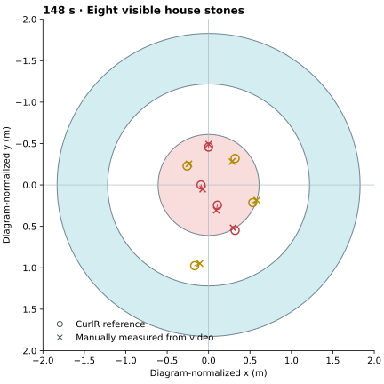
Failures and controls that matter
- Unidentifiable homographies: at 398 s and 449 s, almost all available fitting landmarks lie on the tee line, with only one off-line point. More points did not fix the missing geometry. The unrestricted first run produced large held-out errors. The pipeline now rejects that configuration before fitting a homography. An affine fallback, appropriate as an exploratory approximation for these near-overhead views, gives held-out RMSE of 1.21 and 2.12 cm. Each has only two validation points, so the evidence is limited. Original failed run.
- Stone height / low-angle geometry: a planar transform maps the ice, not the top of a stone. The oblique result is consistent with substantial height bias, but this pilot does not isolate that cause from reference error. No height correction was applied.
- Motion audit: adjacent 230 s and 232 s frames reveal yellow stones moving during end clearance. Those observations were removed from the 231 s comparison, while the two stationary reds were retained. At 309 s, the yellow shooter is moving; only stationary red stones are compared to the preceding official state. The final 469 s collision is calibration-only. Earlier comparisons remain in the audit archive.
- Repeat-zoom check: all seven common house stones at 398/414 s match one-to-one. Their measured positions differ by median 1.72 cm, RMSE 1.78 cm, maximum 2.74 cm. Repeatability is useful evidence but is not absolute accuracy.
- Click sensitivity: 500 seeded perturbations at both 1 and 2 review-image pixels quantify sensitivity to landmark placement. One pixel is two original-video pixels. The reported 95th percentiles describe this noise model only, not total uncertainty or confidence intervals. Distant guards and the low-angle view are more sensitive than central house stones.
Reference audit
CurlR coordinates are diagram pixels, not metres; its stone indices are detection order, not delivery identities. I extracted the original 300 × 600 diagrams from PDF pages 1202–1207. In CurlR's normalized orientation, the tee is near (149.5, 159.5), and the outer ring has radius 120 pixels: one pixel corresponds to about 1.524 cm. Raw diagrams alternate orientation, so direct use of an unnormalized image would flip the result.
Removed/unused stones in the top and bottom storage strips are excluded. Matching is by colour and one-to-one spatial assignment, with dummy unmatched options and a fixed 0.50 m gate. The reported house region is within 2.0 m of the tee. A repeated red stone in end 2 disagrees with the reference by about 20 cm in both video views; that needs a reference-position audit, not blind tuning of the calibration. Official book coordinates are not independently surveyed physical truth.
Per-frame results
| Video time | End / shot | Model | Fit / check | Check RMSE cm | House matches | Record RMSE cm | Unmatched* |
|---|
| 100 s | 1 / 3 | homography | 6 / 4 | 4.01 | 4 | 32.86 | 0 |
| 136 s | 1 / 4 | homography | 8 / 4 | 0.75 | 5 | 3.87 | 0 |
| 148 s | 1 / 9 | homography | 6 / 4 | 2.15 | 8 | 5.23 | 0 |
| 194 s | 2 / 9 | homography | 7 / 4 | 0.61 | 3 | 11.88 | 1 |
| 231 s | 2 / 10 | homography | 6 / 3 | 1.88 | 2 | 15.00 | 0 |
| 309 s | 4 / 9 | homography | 6 / 4 | 1.91 | 2 | 4.63 | 0 |
| 344 s | 5 / 8 | homography | 6 / 4 | 2.45 | 9 | 7.87 | 0 |
| 398 s | 6 / 8 | affine | 7 / 2 | 1.21 | 7 | 6.59 | 0 |
| 414 s | 6 / 8 | homography | 6 / 4 | 2.55 | 7 | 6.05 | 0 |
| 449 s | 6 / 9 | affine | 6 / 2 | 2.12 | 8 | 5.34 | 0 |
| 469 s | 6 / 10 | homography | 6 / 4 | 0.94 | 0 | — | — |
*Unmatched refers to annotated visible observations, including stones outside the house. Invisible reference stones are not counted as missed detections. 231/309 s are partial stationary-state comparisons. 398/414 s repeat the same state. 469 s is excluded from official-state metrics.
Annotated evidence
Green crosses were used to fit; cyan crosses were withheld. Click any image for its larger version. Rectified images are visual diagnostics, not a second validation set.
100 s · End 1 / reference shot 3
HOMOGRAPHY · matched visible subset · 6 fitted / 4 withheld landmarks
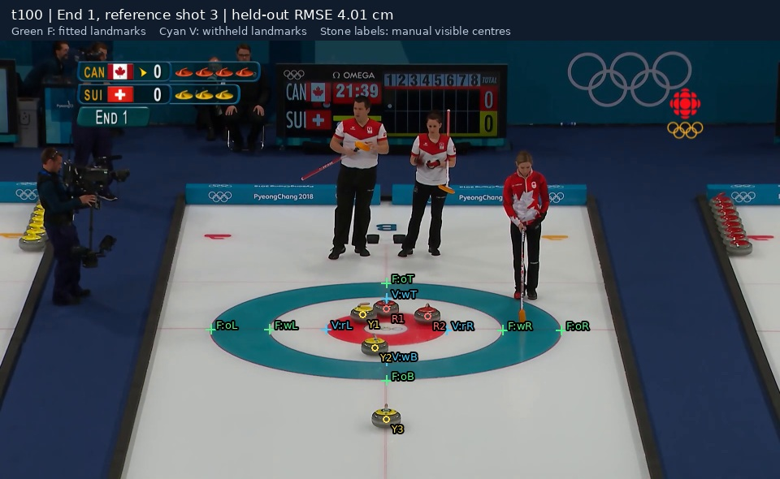
Oblique view. Stone body centres project above the ice plane; no height correction. All visible stones manually marked.
Withheld landmark RMSE 4.01 cm. One-pixel calibration-click perturbations: 95th-percentile stone displacement 9.05 cm (includes guards where annotated).
Rectified view · Original official diagram · Full-resolution source frame
136 s · End 1 / reference shot 4
HOMOGRAPHY · matched visible subset · 8 fitted / 4 withheld landmarks
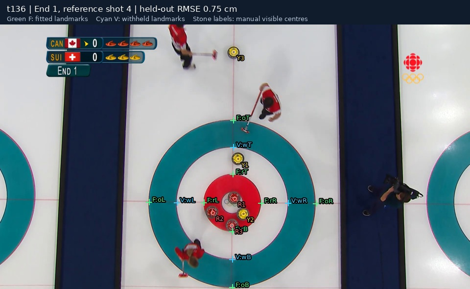
After the draw, before the next broadcast cut; distant guard is an extrapolation check.
Withheld landmark RMSE 0.75 cm. One-pixel calibration-click perturbations: 95th-percentile stone displacement 3.50 cm (includes guards where annotated).
Rectified view · Original official diagram · Full-resolution source frame
148 s · End 1 / reference shot 9
HOMOGRAPHY · matched visible subset · 6 fitted / 4 withheld landmarks
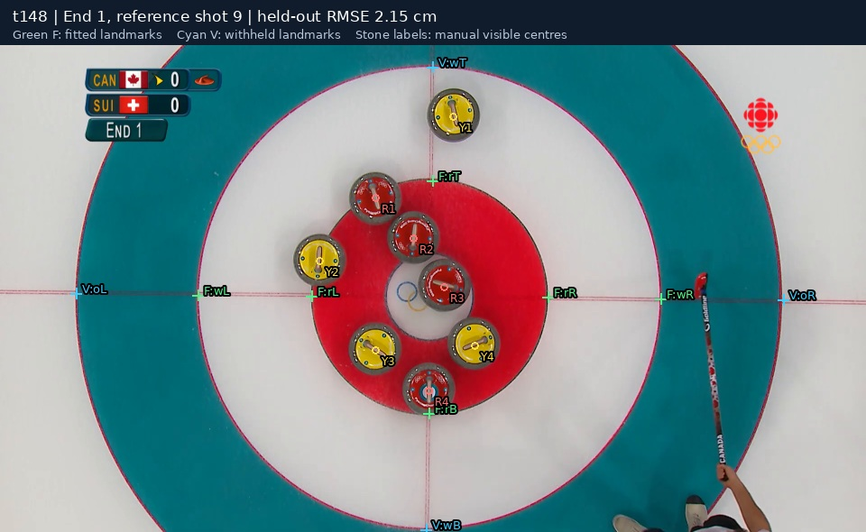
One Canadian stone remains on score graphic. Both guards outside crop. House layout is also almost unchanged from shot 8; exact shot indexing relies on broadcast context.
Withheld landmark RMSE 2.15 cm. One-pixel calibration-click perturbations: 95th-percentile stone displacement 1.11 cm (includes guards where annotated).
Rectified view · Original official diagram · Full-resolution source frame
194 s · End 2 / reference shot 9
HOMOGRAPHY · matched visible subset · 7 fitted / 4 withheld landmarks
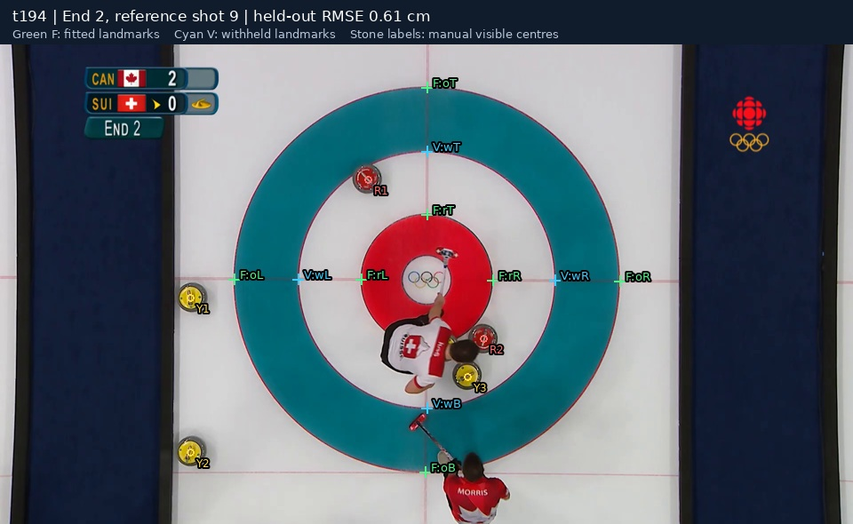
One yellow house stone is obscured by player. Wide lateral yellow stones are explicitly annotated; no invented occluded centres.
Withheld landmark RMSE 0.61 cm. One-pixel calibration-click perturbations: 95th-percentile stone displacement 2.53 cm (includes guards where annotated).
Rectified view · Original official diagram · Full-resolution source frame
231 s · End 2 / reference shot 10
HOMOGRAPHY · partial stationary · 6 fitted / 3 withheld landmarks
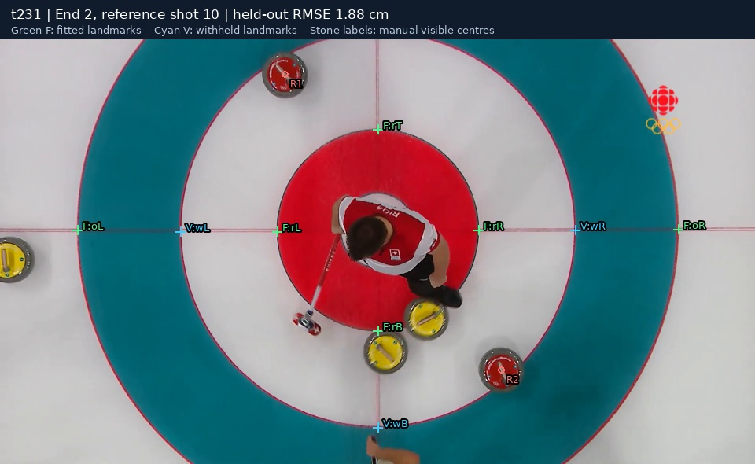
End already finished; adjacent frames 230/232 show the yellow stones being moved during clearance. Compare only the two stationary red stones with shot 10; this is a partial-board comparison.
Withheld landmark RMSE 1.88 cm. One-pixel calibration-click perturbations: 95th-percentile stone displacement 2.25 cm (includes guards where annotated).
Rectified view · Original official diagram · Full-resolution source frame
309 s · End 4 / reference shot 9
HOMOGRAPHY · partial stationary · 6 fitted / 4 withheld landmarks
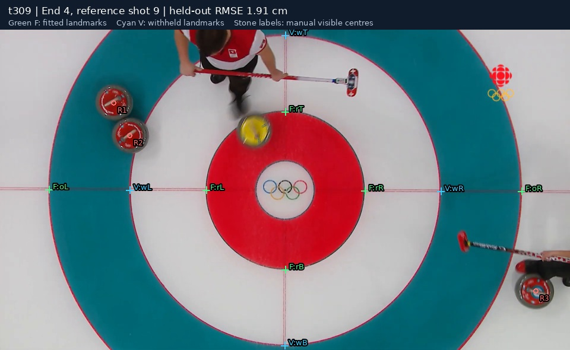
During shot 10: compare only the three stationary red stones to state after shot 9. Moving yellow shooter explicitly excluded; this is not a complete post-shot board.
Withheld landmark RMSE 1.91 cm. One-pixel calibration-click perturbations: 95th-percentile stone displacement 2.85 cm (includes guards where annotated).
Rectified view · Original official diagram · Full-resolution source frame
344 s · End 5 / reference shot 8
HOMOGRAPHY · matched visible subset · 6 fitted / 4 withheld landmarks
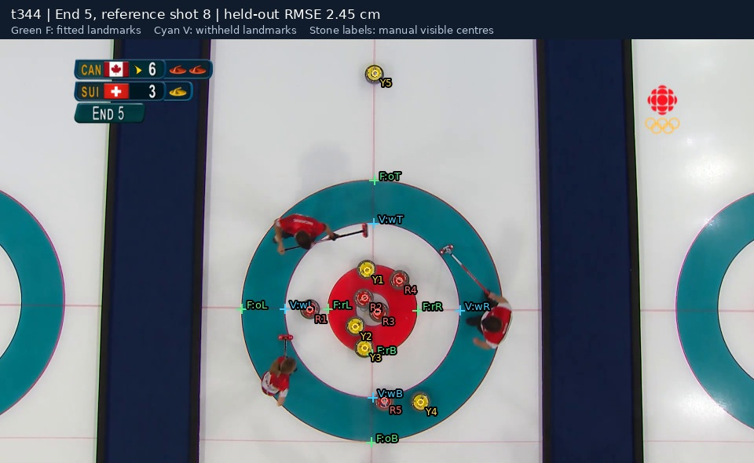
End 5 after shot 8; five red and five yellow stones visible. Outer-right and inner-top intersections occluded, not used.
Withheld landmark RMSE 2.45 cm. One-pixel calibration-click perturbations: 95th-percentile stone displacement 2.99 cm (includes guards where annotated).
Rectified view · Original official diagram · Full-resolution source frame
398 s · End 6 / reference shot 8
AFFINE · matched visible subset · 7 fitted / 2 withheld landmarks
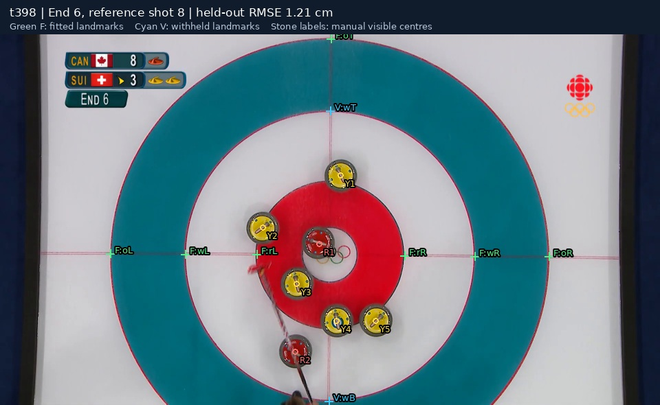
Close view after shot 8. Two withheld vertical landmarks only; two red guards outside crop. Broadcast count graphic has not yet updated.
Withheld landmark RMSE 1.21 cm. One-pixel calibration-click perturbations: 95th-percentile stone displacement 0.80 cm (includes guards where annotated).
Rectified view · Original official diagram · Full-resolution source frame
414 s · End 6 / reference shot 8
HOMOGRAPHY · matched visible subset · 6 fitted / 4 withheld landmarks
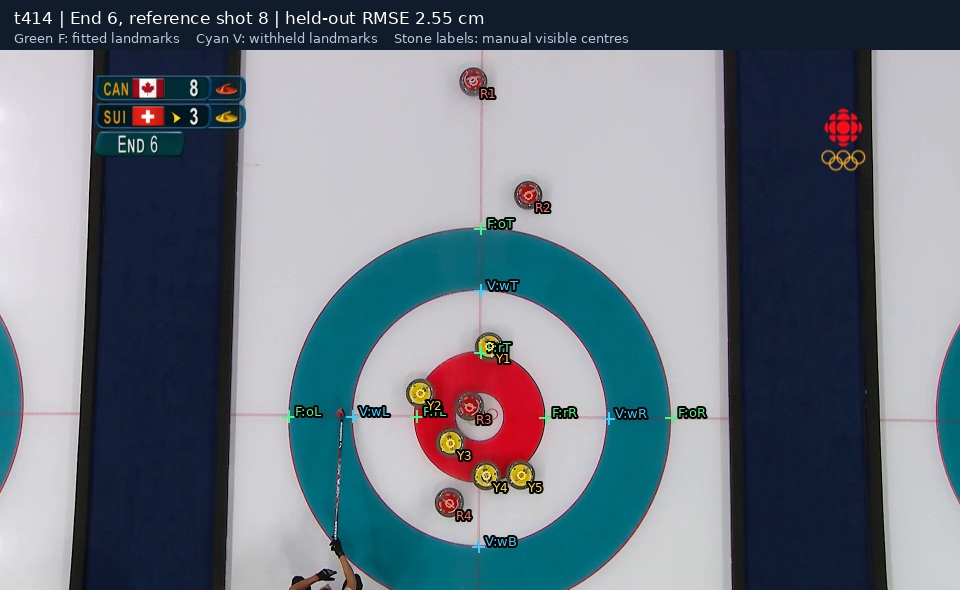
Repeat observation of the SAME shot-8 board at a wider zoom, not an independent shot. Two red guards are extrapolation checks.
Withheld landmark RMSE 2.55 cm. One-pixel calibration-click perturbations: 95th-percentile stone displacement 6.80 cm (includes guards where annotated).
Rectified view · Original official diagram · Full-resolution source frame
449 s · End 6 / reference shot 9
AFFINE · matched visible subset · 6 fitted / 2 withheld landmarks
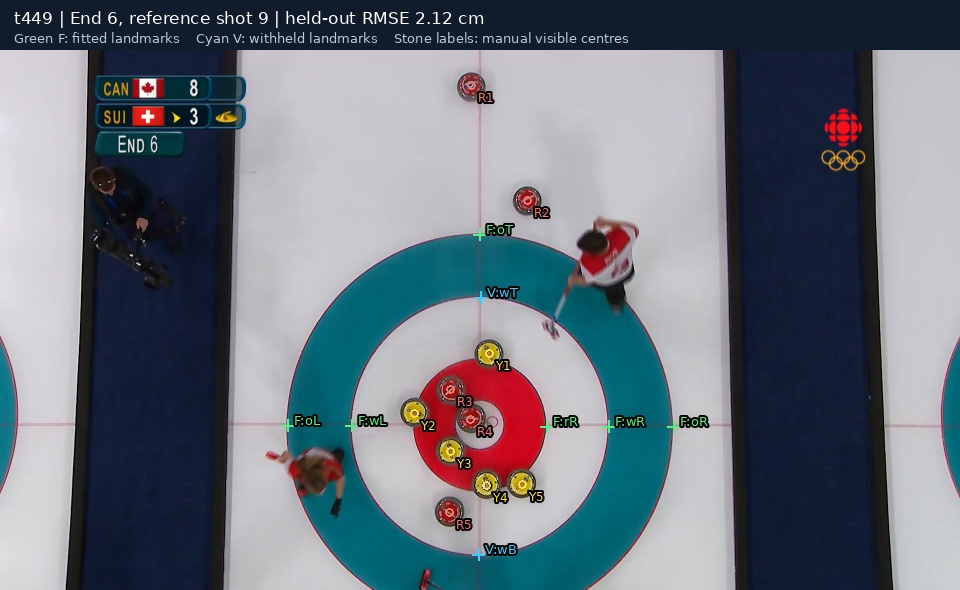
After Canadian final draw, one Swiss stone remains. Inner-left/top/bottom landmarks hidden by stones. Only two vertical withheld landmarks.
Withheld landmark RMSE 2.12 cm. One-pixel calibration-click perturbations: 95th-percentile stone displacement 2.47 cm (includes guards where annotated).
Rectified view · Original official diagram · Full-resolution source frame
469 s · End 6 / reference shot 10
HOMOGRAPHY · excluded unsettled · 6 fitted / 4 withheld landmarks
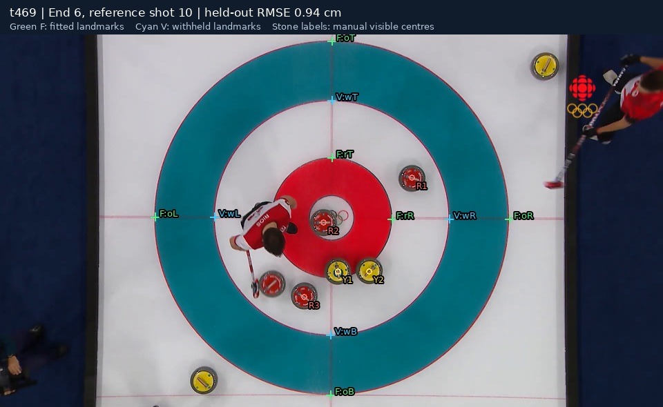
Final collision outcome is still settling; use for calibration only, NOT official-state error. Occlusion and moving stones prevent a clean post-shot observation.
Withheld landmark RMSE 0.94 cm. One-pixel calibration-click perturbations: 95th-percentile stone displacement 0.96 cm (includes guards where annotated).
Rectified view · Original official diagram · Full-resolution source frame
Limits on the conclusion
This is a selected-view, single-match exploratory pilot. The same assistant annotated fitting and validation points; no independent human annotator or physical survey checked them. The affine model choice was made after the initial homography failure, and motion exclusions were made during inspection, so this is not a preregistered or blind test. The painted radii are nominal, residual lens distortion is unmodelled, and diagrams have quantization plus unknown placement error.
The experiment demonstrates a workable manual measurement path and exposes failure conditions. It does not establish general broadcast robustness, automatic detection quality, end-to-end game-state accuracy, full-board coverage or clinical/sport-science-grade measurement.
Concrete next experiment
Freeze the overhead-only acceptance rule, collect a new unexamined set of 20 shots from another match, and compare automatically detected stone centres against independently checked manual centres. Keep the calibration-basis rejection, explicit moving/occluded flags, and game-level separation. Report accepted-shot coverage and unmatched stones alongside error. Use manually audited video labels for the tight positional claim; keep CurlR agreement as a separate reference comparison.